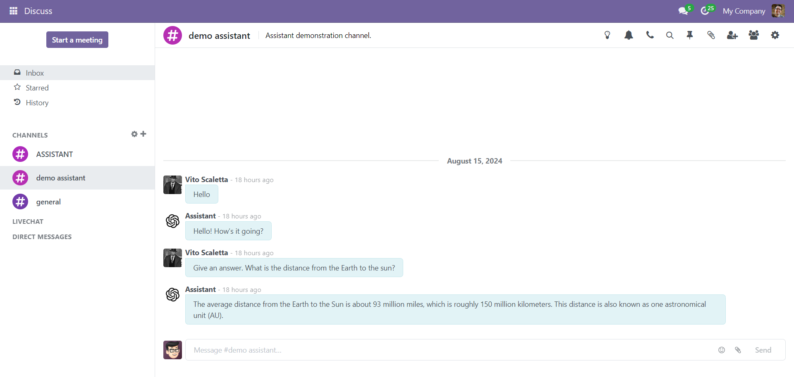
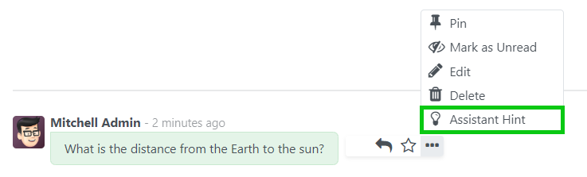
The assistant's response to the message will be added in the message input field
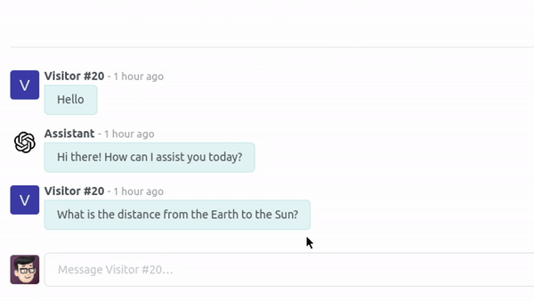
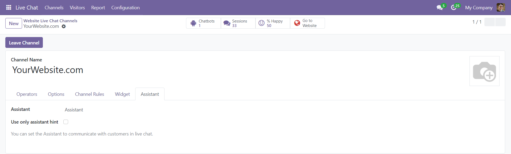
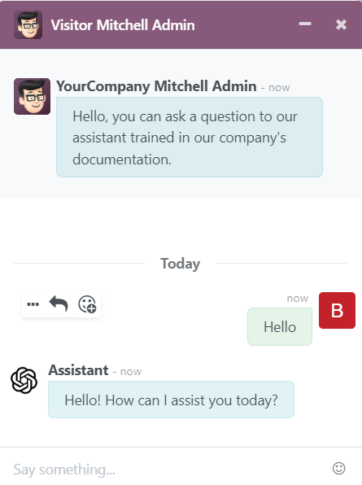
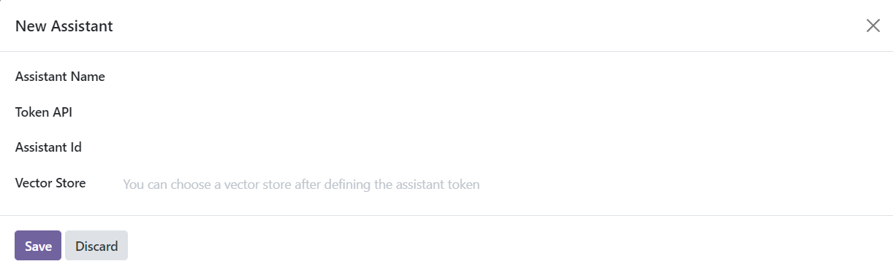
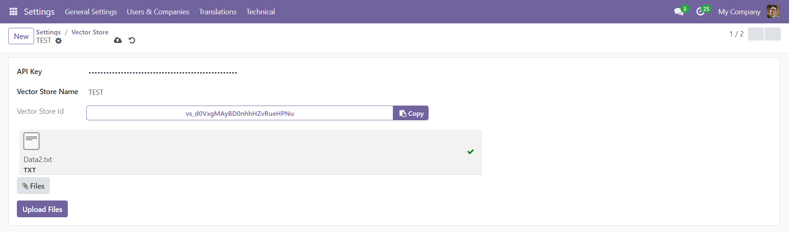
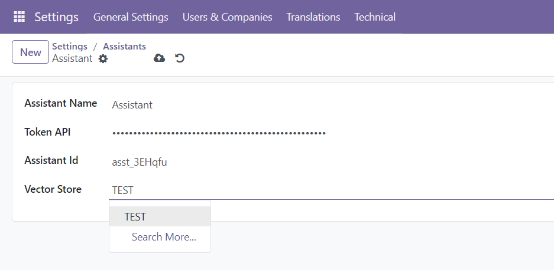
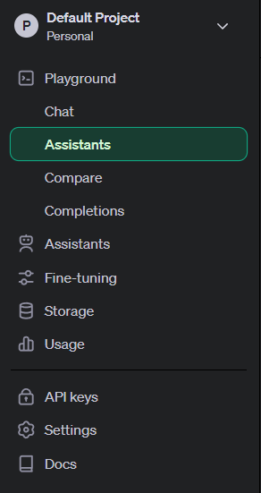
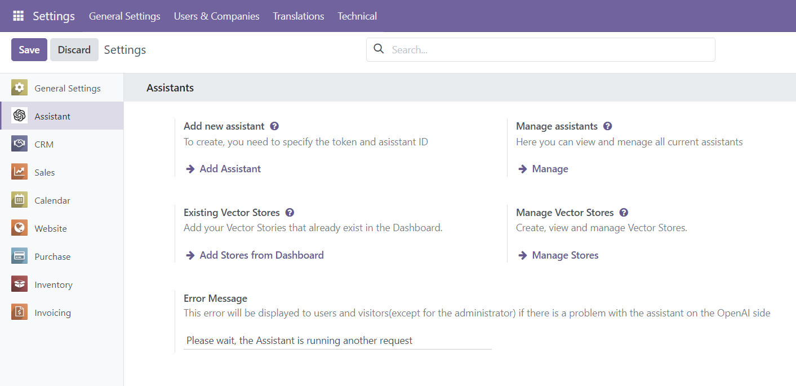
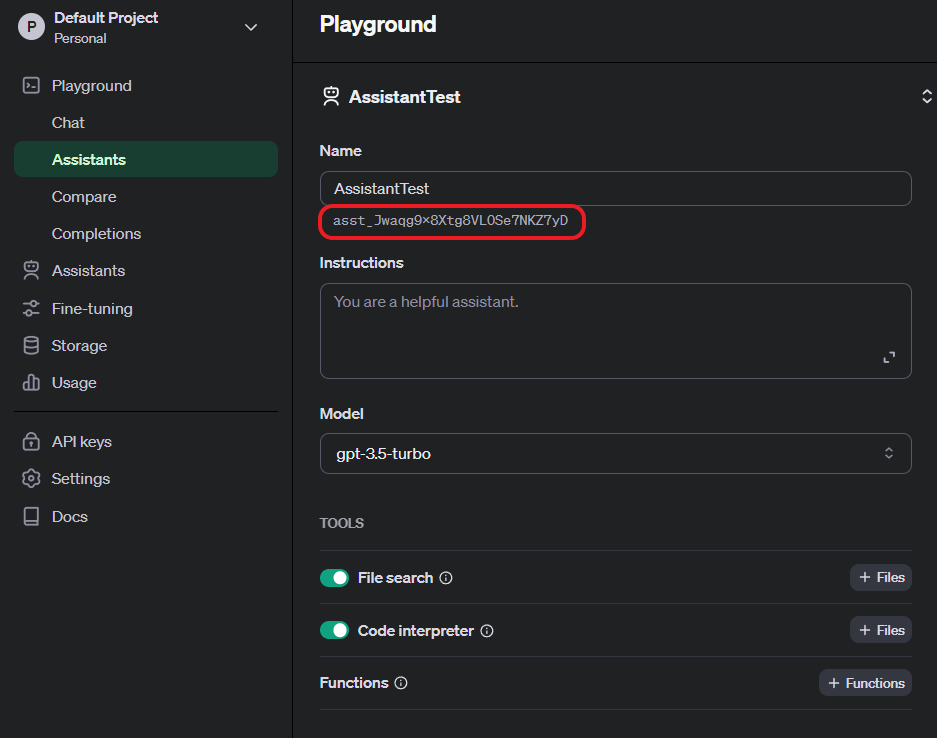
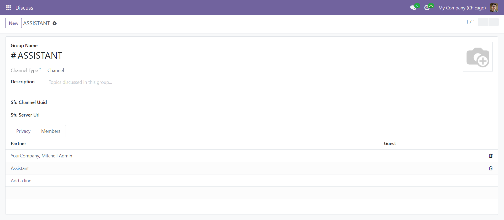
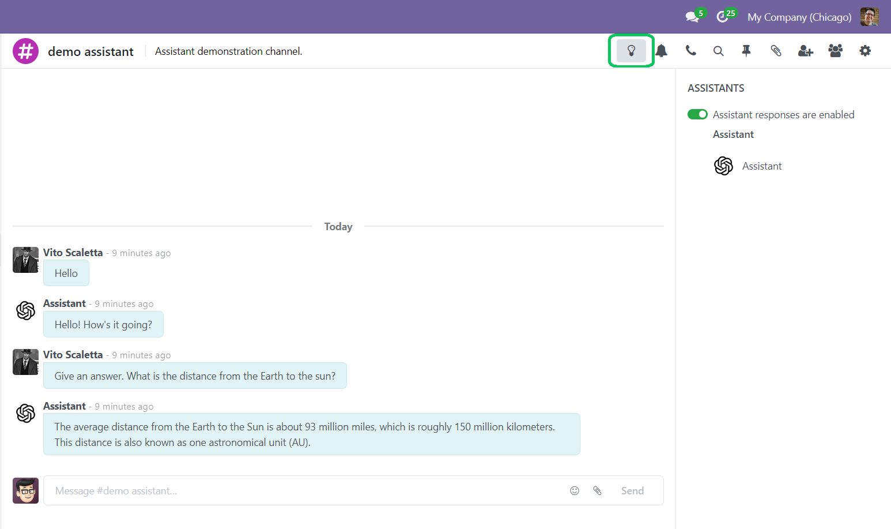
In Settings you can add and manage Vector Stores.
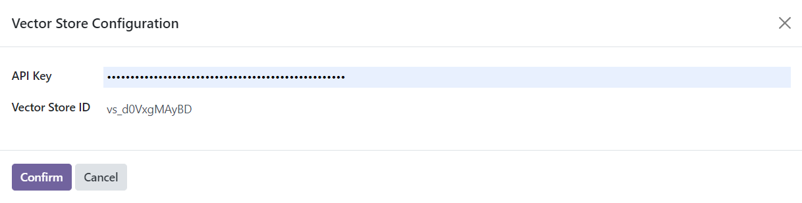
It will be marked with a green label, after editing, the label will disappear.
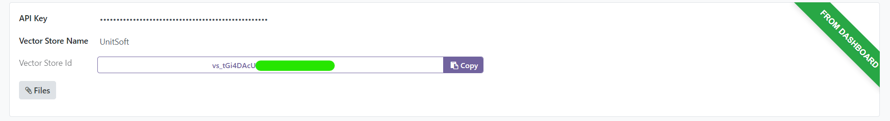
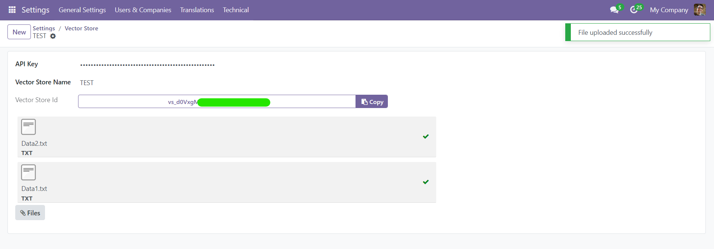
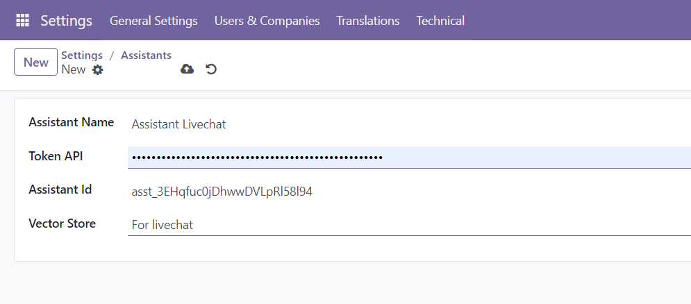
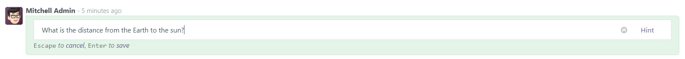
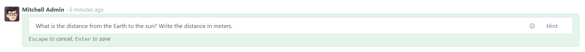
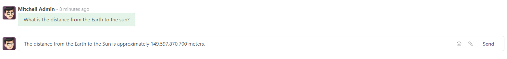
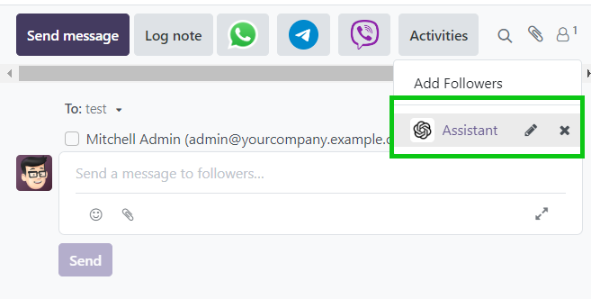
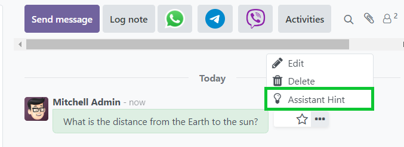
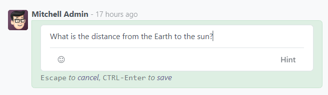
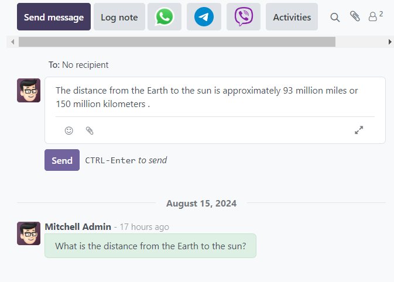
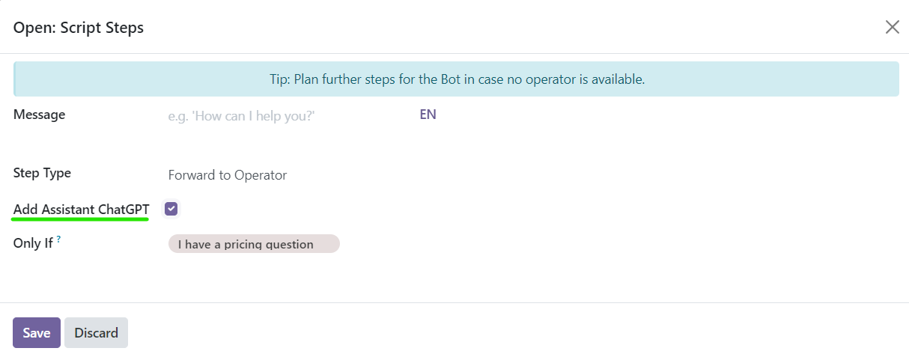
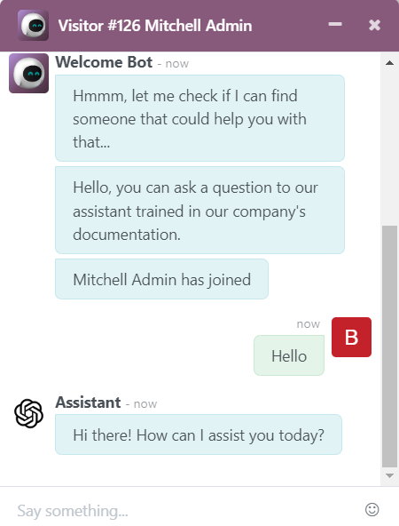
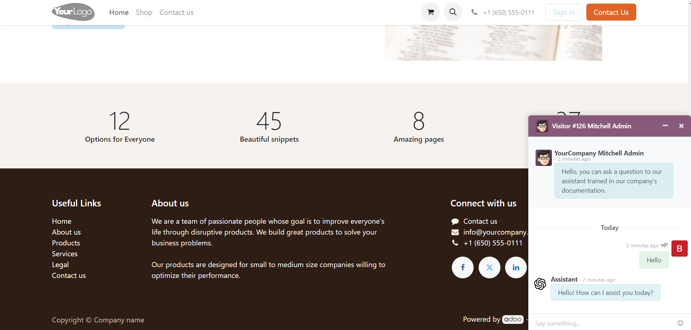
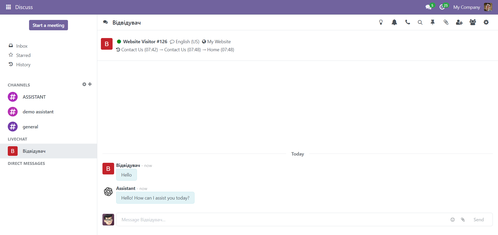
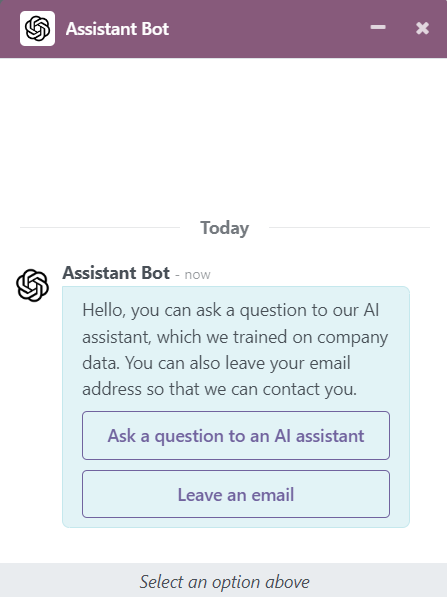
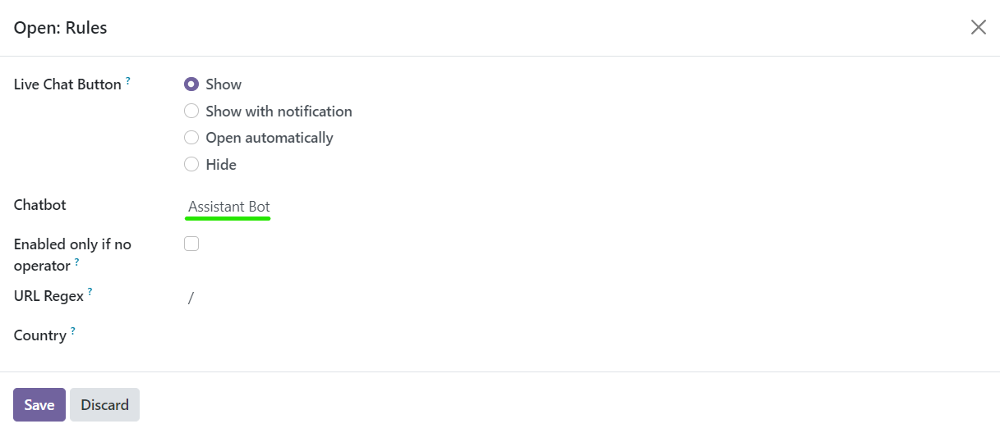
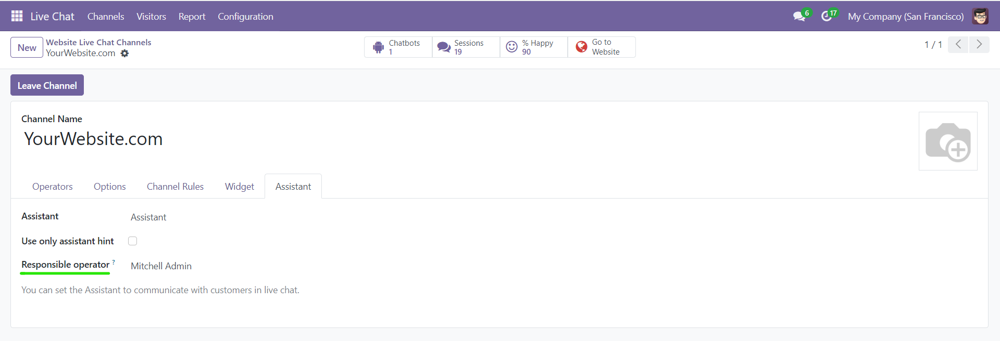
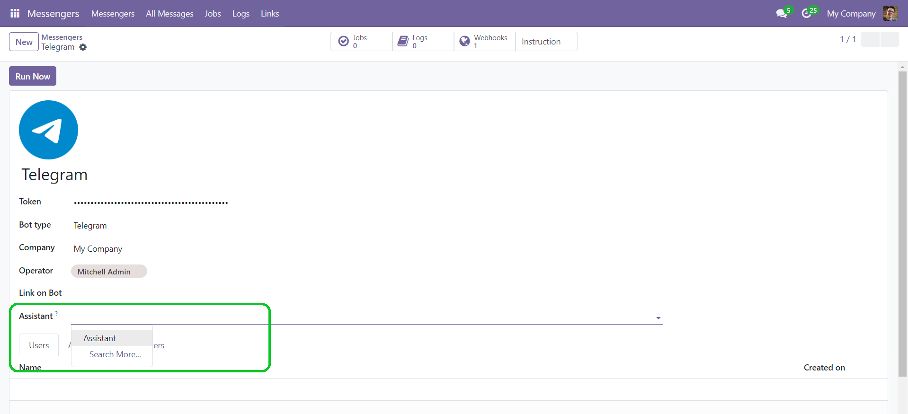